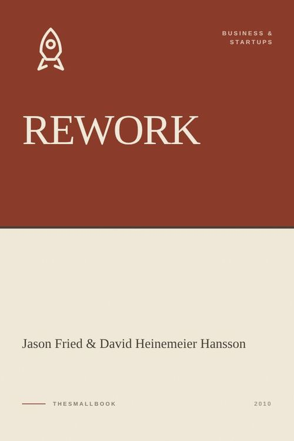

Library › Ask the Library › How do I start a business with no money?
How do I start a business with no money?
The short answer
Start with a service, not a product, your skill is the only inventory you already own. Find one paying customer before building anything. Revenue is validation; funding is optional. The $100 startup is a real category, not a slogan.
The books behind the answer

The $100 Startup
Chris Guillebeau · 2012 · 8 min · 6 lessons
You don't need funding, permission or a perfect plan - you need a skill, a customer, and the nerve to start today.
- Start With What You Have: One skill + one paying customer = a business. Scale comes after proof.

The Lean Startup
Eric Ries · 2011 · 8 min · 6 lessons
A startup's only job is learning what customers actually want - faster than the money runs out.
- The MVP: Ship the smallest thing someone will pay for, learn from real use, not theory.

Rework
Jason Fried & David Heinemeier Hansson · 2010 · 8 min · 6 lessons
Plans are guesses, meetings are toxic, workaholism is stupid, and you need less than you think. Just start making something.
- Build a Business, Not a Startup: Profit from day one beats 'growth at all costs' for the bootstrapped founder.
Questions people ask next
Can I read this in Hindi?
Yes. This answer is written in simple English. Open any linked book and choose Hindi or Hinglish to read the full lessons in your language, with audio where available.